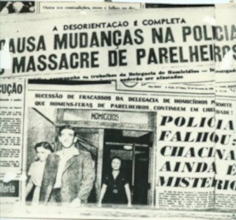
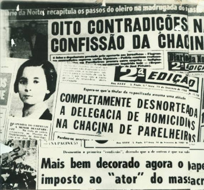

Chacina de Parelheiros
A Chacina de Parelheiros aconteceu na cidade de São Paulo no dia 07 de fevereiro de 1960. O comerciante Miguel Brás do Prado, a mulher Maria Aparecida Eduardo e os quatro filhos do casal foram mortos a tiros, facadas e machadadas após assalto na casa da família. Os suspeitos eram Gabriel do Espírito Santo, Ernesto Seixas e Evaristo Godói. Em uma matéria que saiu no jornal Correio da Manhã, na época, os nomes das crianças foram citados e a descrição detalhada de como os corpos foram encontrados foram alguns dos aspectos analisados acerca da forma como a matéria foi escrita.
No dia 13 de fevereiro do mesmo ano, saiu uma matéria no mesmo jornal : Polícia ‘fabrica’ criminoso no caso da chacina de Parelheiros. Nela fica claro que existem dúvidas quanto ao verdadeiro autor do crime, dada a rapidez que a polícia da época conseguiu resolver o crime e pela forma que o criminoso contou sua versão do crime.
